この動画で伝える一文
「プロンプトの技術はもう要らない」と思っている人に、プロンプトは消えたのではなく、ハーネス、設計書、要求・要件、ガイドラインといった裏側のコンテキストへ潜っただけだと伝え、「表層が手軽になった今こそ、裏側をどこまで深く設計できるかが問われる」という筆者の確信を残す。
視聴者
AI を日常的に使い、「最近はラフに頼んでも通る。プロンプトを工夫する時代は終わった」と感じているエンジニア・制作者・事業側の人。プロンプトエンジニアという職種が話題にならなくなったことを知っている。見終わったあとに「自分の手元の一行の下に、何が積まれているか」を考え、裏側（ガイドライン、設計書、要求・要件、ハーネス）を整える側に回りたくなることを狙う。
構成と尺
| カット | 時間 | 尺 | 役割 | 見出し |
|---|---|---|---|---|
| 01 | 0:00–0:07 | 7秒 | 導入（他者の声＝思い込み） | プロンプトの技術は、もう要らない。 |
| 02 | 0:07–0:16 | 9秒 | 留保（職種の消滅・筆者の使い方） | うなずける部分は、ある。 |
| 03 | 0:16–0:26 | 10秒 | 反転（主張） | 消えたんじゃない。潜っただけ。 |
| 04 | 0:26–0:38 | 12秒 | 根拠の核（断面の見せ場） | その一言の下に、地層がある。 |
| 05 | 0:38–0:49 | 11秒 | 根拠（Web 制作の例） | 「おしゃれなホームページを作って」だけでは、限界。 |
| 06 | 0:49–1:00 | 11秒 | 根拠（システム開発） | 設計を、言葉で定義する。 |
| 07 | 1:00–1:13 | 13秒 | 根拠（筆者の仕事での比較） | すべてで、明確な差。 |
| 08 | 1:13–1:24 | 11秒 | 留保と理由 | ポン出しでは、届かない領域がある。 |
| 09 | 1:24–1:33 | 9秒 | 主張（これから） | 分かれ目は、ドメイン知識 × コンテキスト設計。 |
| 10 | 1:33–1:42 | 9秒 | 本人の結論 | 表層は、手軽になった。だから、裏側の深さが問われる。 |
| 11 | 1:42–1:47 | 5秒 | 制作表示 | エンドロゴ |
尺の目安：ナレーション 637 字 ÷ 約 7 字/秒 ≒ 91 秒＋文の間・見せ場（04 の Crane 2.5 秒、07 の積み上げ）≒ 本編 102 秒。等速での読了・観察時間は制作側の試作で確かめる（字数は目安）。
カット表・絵コンテ
各カットに「はじめ」「おわり」の 2 コマと間の動きを書いています。コマ画は構図のラフ（1280×720、ライト）で、完成映像の躍動感を確かめたものではありません。秒数・位置・大きさ・イージングは参考値で、実装の手順とパラメータは制作側の裁量です（画面全体を大きく動かすこと、可読性、留保は緩めない）。絵コンテ上の小さな灰の注記は説明で、画面の文字ではありません。
プロンプトの技術は、もう要らない。
0:00–0:07 / 約7秒 ・ 導入（他者の声＝思い込み）

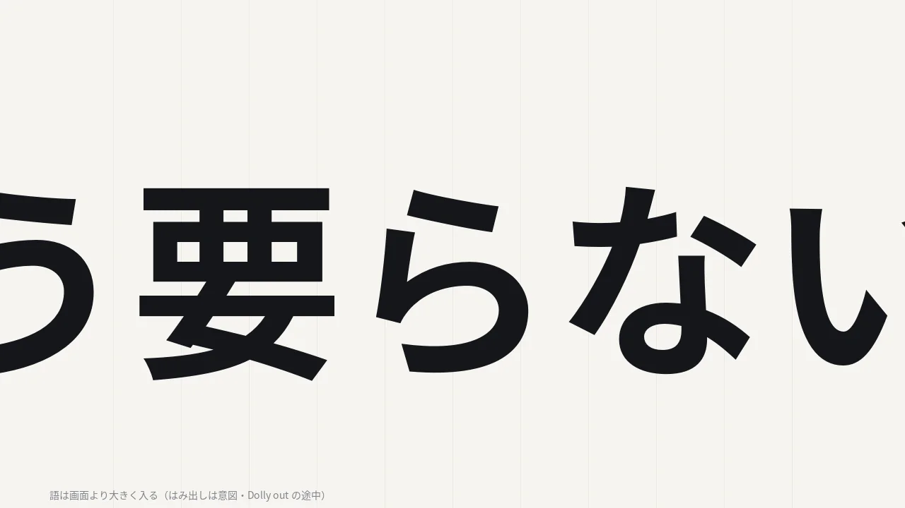

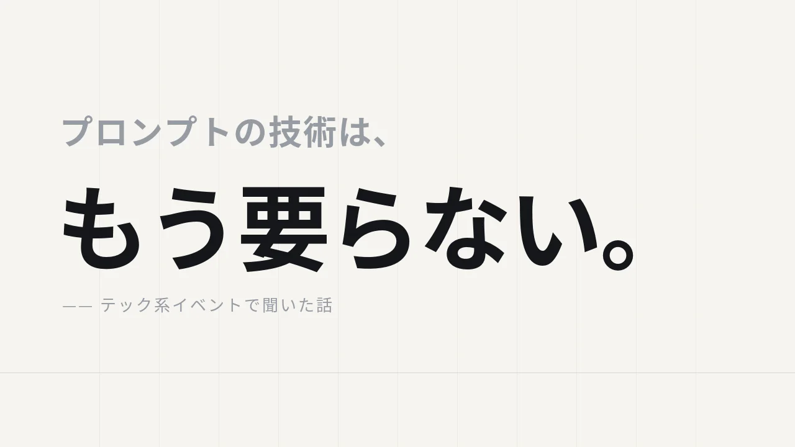
プロンプトの技術は、
もう要らない。
── テック系イベントで聞いた話
プロンプトの技術は、もう要らない。先日のテック系イベントで、そんな話を聞きました。
声 41字 ／ 画面 32字
はじめ：中央・1 語が画面を埋める（面の重心）。おわり：左揃え 3 段、重心は左上。下端 1/6 に余白と細い線。
主役は「もう要らない。」。筆者の主張ではないので灰と墨の対比で「聞いた話」に留める。
試聴待ち1 小節目からキックの立つ拍。「もう要らない」の頭にアクセント。
- 0.0–1.6 秒：「もう要らない。」の塊を scale 2.4→1.0、x +180→0px（E_SLAM）。画面全体（カメラ）は Dolly out。
- 1.6–2.2 秒：前置き「プロンプトの技術は、」が行マスクで上から下へ現れる（clip-path inset 100%→0、0.45 秒、E_SLAM）。
- 2.2–6.4 秒：読む間、文字群ごと scale 1.00→1.04、x 0→−24px（E_DRIFT）。グリッドの縦線（12 列）を逆向きに +40px 流す。
- 5.4–6.4 秒：表層の線を左から右へ描く（scaleX 0→1、E_SINK）。
- 6.4–7.0 秒：全体を上へ Tilt（y 0→−120px、E_PUSH）。02 へ。
うなずける部分は、ある。
0:07–0:16 / 約9秒 ・ 留保（職種の消滅・筆者の使い方）

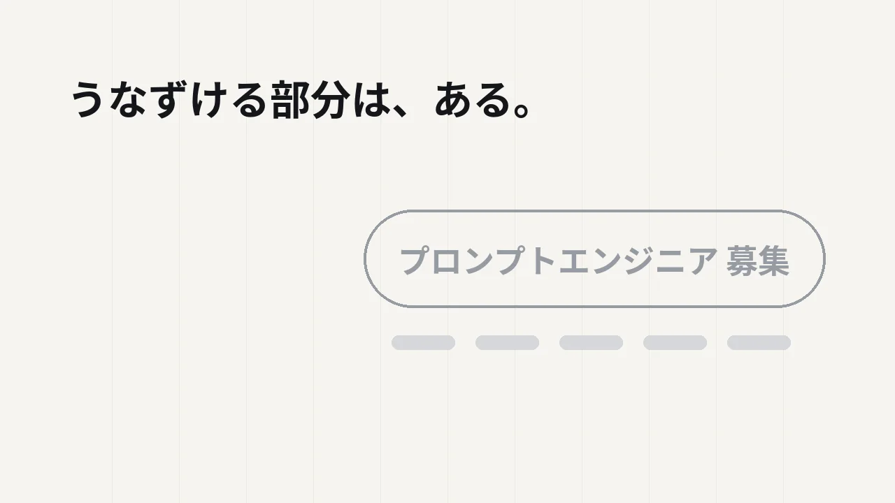

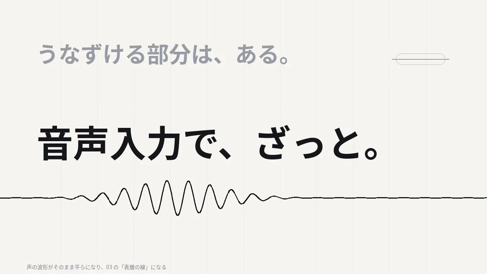
うなずける部分は、ある。
プロンプトエンジニア 募集
音声入力で、ざっと。
うなずける部分はあります。プロンプトエンジニアの募集はほぼ見かけないし、私も音声入力でざっと指示しています。
声 54字 ／ 画面 34字
はじめ：左上の文＋右の札（対角）。おわり：中央左の大きな 1 行と、画面幅いっぱいの波形（横の帯の重心）。
主役は「うなずける」。留保は読める大きさで残す。波形の線＝声（ナレーションの一行）で、03 の表層の線に姿を変える。
試聴待ち波形の区間だけ BGM の中域を少し下げ、声を前へ。
- 0.0–0.5 秒：01 からの Tilt を受け、「うなずける部分は、ある。」を下から行マスク（E_SLAM）。
- 0.5–3.5 秒：札を scale 1.0→0.18、右上（x +420px, y −300px）へ Dolly out（E_SINK）。求人の灰の棒は 1 本ずつ左へ抜ける（stagger 0.12 秒）。
- 3.5–3.8 秒：小さくなった札に取り消し線（scaleX 0→1、0.3 秒）。
- 3.8–4.4 秒：「音声入力で、ざっと。」を画面左外から x −600→0px で滑り込ませる（E_SLAM）。
- 4.4–8.2 秒：波形は振幅 1.0→0 へ減衰しながら左から右へ流れ、最後は 1 本の水平線に。カメラは右へ Truck 60px。
- 8.2–9.0 秒：平らになった線が 03 の表層の線にマッチカット。
消えたんじゃない。潜っただけ。
0:16–0:26 / 約10秒 ・ 反転（主張）

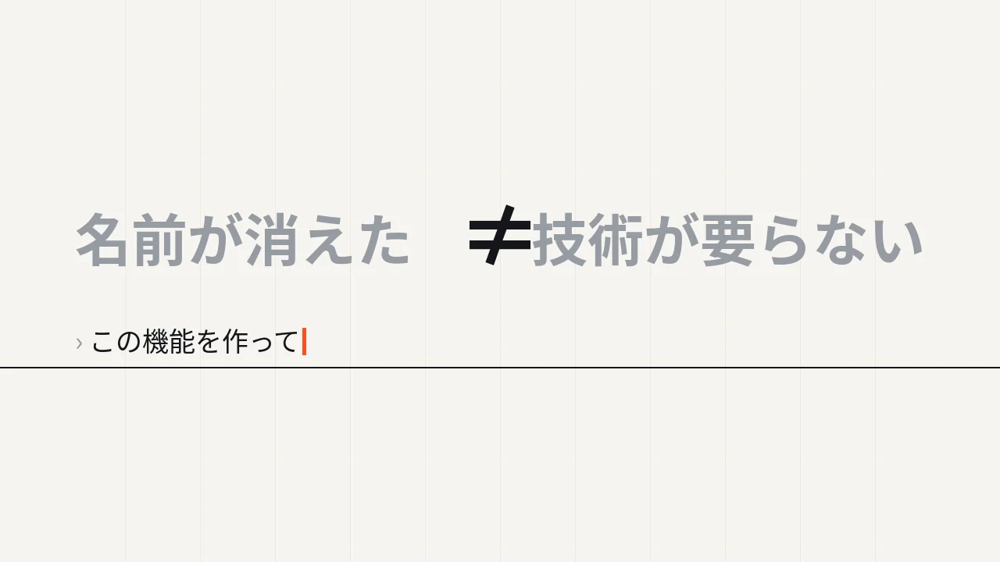

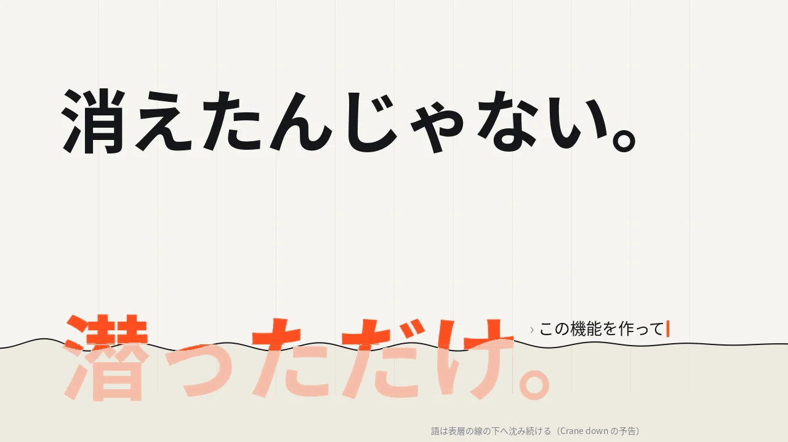
名前が消えた
≠
技術が要らない
消えたんじゃない。
潜っただけ。
› この機能を作って
でも、技術まで不要になったとは思いません。職種の名前が消えたことと、意図を伝える技術が要らなくなったことは、別の話です。
声 60字 ／ 画面 38字
はじめ：横一列（左・中央の記号・右）。おわり：上下 2 段の巨大な語、表層の線が画面を上下に割る（重心は線）。
主役は「潜っただけ。」。朱をここで初めて使う（朱＝主張の決め語）。「潜った」を、水に入る動きで見せる。表層の線を横から見た水面に見立て、字が上から入った衝撃で水面を揺らす。揺れは線と線より下だけに掛け、線より上の字形は崩さない。
試聴待ち「潜っただけ」の頭で一拍だけ抜き（無音 0.5 秒）、着水の瞬間に低い水音を 1 つ（とぷん）。沈み始めで低音が戻る。
- 0.0–0.6 秒：「名前が消えた」「技術が要らない」を左右から叩き込み、中央に「≠」が回転 −30°→0° で入る（E_SLAM）。
- 2.6–3.4 秒：左右の 2 語が外へ押し出され、「消えたんじゃない。」が scale 1.6→1.0 で上段に（E_SLAM）。
- 3.4–7.6 秒：「潜っただけ。」が上から落ちて表層の線に着水し、ゆっくり y +0→+80px 沈む（E_SINK）。線より下の部分は s18 のとおり地層テクスチャで満たす。画面全体は Dolly in（scale 1.00→1.08）。
- 着水の瞬間（3.4 秒前後）から約 1.5 秒：字が水面を割って入った衝撃で、表層の線（水面）が揺れる。字の幅の所は少し押し下げられ、その両端から波が左右へ伝わって減衰する（振幅 8〜12px、波長 120〜160px。参考値）。線より下の面の境目と、字の濃い朱／淡い朱の境目も同じ水面の形に沿う。沈んだ字の部分は水中のように左右へ 2〜4px ゆらぐ（時刻から決まる正弦。g07）。線より上の字は揺らさない。同心円の波紋（上から見た輪）は描かない。
- 7.6–10.0 秒：カメラが表層の線へ Crane down 開始。最後の 0.3 秒に縦方向のズームブラー（白の閃光なし）。04 へ。
その一言の下に、地層がある。
0:26–0:38 / 約12秒 ・ 根拠の核（断面の見せ場）

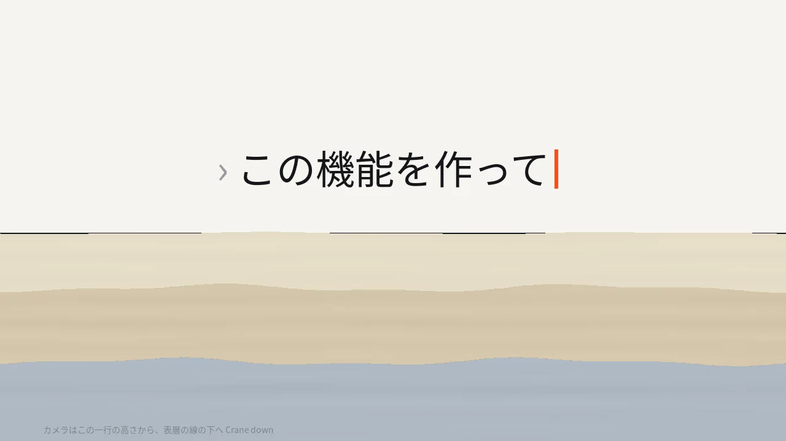

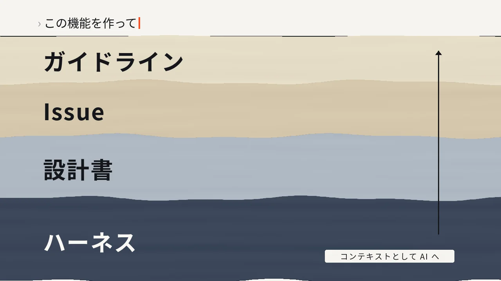
› この機能を作って
ガイドライン
要求・要件
設計書
ハーネス
コンテキストとして AI へ
この機能を作って。一言に見えても、その下ではハーネスや、設計書や要求・要件に整理された情報が、コンテキストとしてAIに渡っています。
声 66字 ／ 画面 39字
はじめ：上 1/2 が紙色、中央の 1 行（点の重心）。おわり：全面が地層の横帯、ラベルは左揃えで縦に並ぶ（重心は下へ沈む）。
主役はラベル 4 語。表の「この機能を作って」との大きさの対比（0.45 倍 vs 画面幅）で「裏の厚み」を見せる。3D（three.js）はここで使用：一行が層に支えられている因果を奥行きで見せるため。
試聴待ちCrane down の 2.5 秒は低音のスイープで支え、着地でスネアのアクセント。
- 0.0–2.5 秒：Crane down（カメラ y 0→+1080px 相当、E_SINK）。地層は縦の視差：ガイドライン 1.0／要求・要件 0.85／設計書 0.7／ハーネス 0.55 の速さ（s15）。一行の入力は DOM 層で上へ流れ、上端に残る（scale 1.0→0.45）。
- 0.4–3.2 秒：境目の線 4 本を左から右へ描き（各 0.6 秒、stagger 0.3 秒）、0.2 秒遅れて層の面を塗る（t64）。
- 2.5–6.0 秒：ラベルを層ごとに行マスクで出す（上から順、stagger 0.5 秒、E_SLAM）。ナレーションの語順（ハーネス→設計書→要求・要件）に合わせ、読んだ層のラベルを一瞬 scale 1.08 に押す。
- 6.0–10.5 秒：カメラはゆっくり Pan（x 0→−80px）＋わずかな Roll（0°→−2°）。層の境目は波打ち続ける（振幅 6px、周期 3 秒、時刻から決まる正弦）。
- 8.0–9.0 秒：右の矢印を下から上へ描く（「渡る向き」）。
- 10.5–12.0 秒：上へ Whip pan（ブレ 0.25 秒）で表層の高さへ戻り、05 へ。
「おしゃれなホームページを作って」だけでは、限界。
0:38–0:49 / 約11秒 ・ 根拠（Web 制作の例）

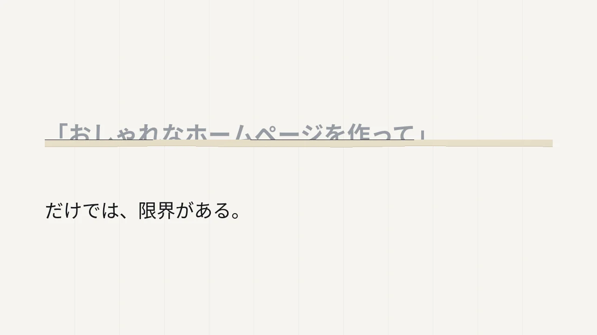

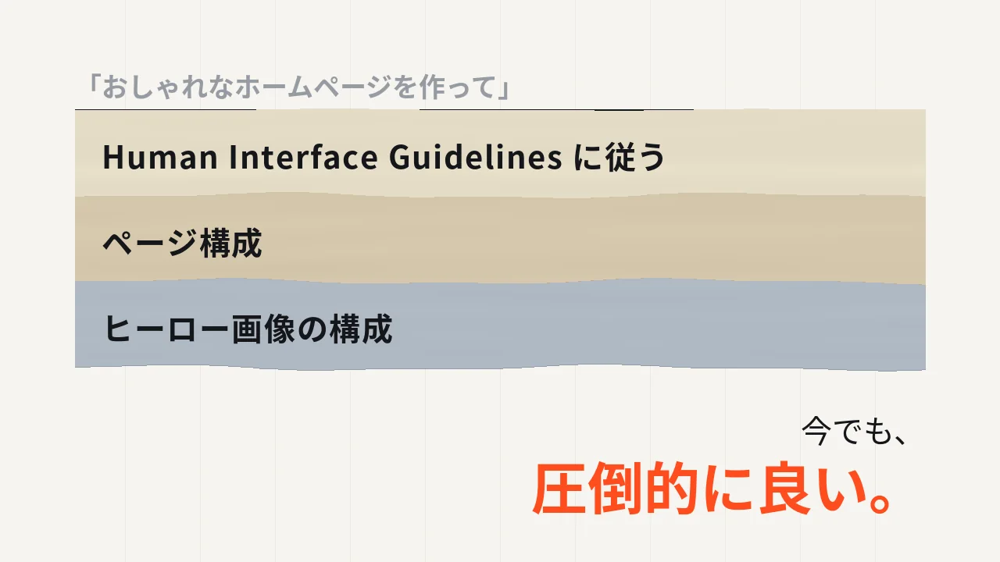
「おしゃれなホームページを作って」
だけでは、限界がある。
Human Interface Guidelines に従う
ページ構成
ヒーロー画像の構成
今でも、
圧倒的に良い。
Webサイトも、「おしゃれなホームページを作って」だけでは限界がある。ガイドラインやページ構成まで伝えたほうが、今でも圧倒的に良い結果が出ます。
声 72字 ／ 画面 80字
はじめ：1 行＋極薄の帯（細い横線の重心）。おわり：上に圧縮した一行、中段に厚い帯、右下に決め語（右下へ重心が落ちる）。
主役は「圧倒的に良い。」。HIG は名前だけでロゴは出さない。
試聴待ち層が差し込まれる 3 回にハイハットの刻みを重ねる（方向のみ、試聴待ち）。
- 0.0–0.6 秒：04 からの Whip pan を受けて表層の高さに着地（ブレ 0.25 秒）。
- 0.6–3.6 秒：灰の一行を左から行マスク、「だけでは、限界がある。」を下段に（E_SLAM）。
- 3.6–7.6 秒：層を下から 1 枚ずつ差し込む（各 y +120→0px、0.5 秒、E_SLAM、stagger 0.6 秒）。差し込まれるたびに一行と線が上へ押し上げられる（押し上げ＝支える）。
- 7.6–8.2 秒：「圧倒的に良い。」を回転 4°→0°・scale 1.3→1.0 で叩き込む（s16）。
- 8.2–11.0 秒：画面全体を左へ Pan（x 0→−160px）し、最後に地層ごと 90° Roll して 06 の縦の柱へ。
設計を、言葉で定義する。
0:49–1:00 / 約11秒 ・ 根拠（システム開発）

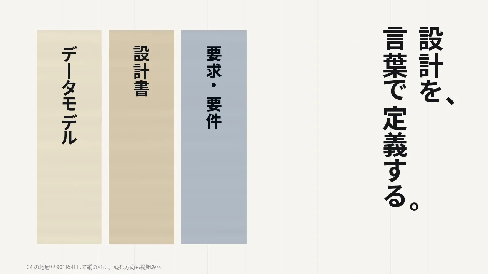

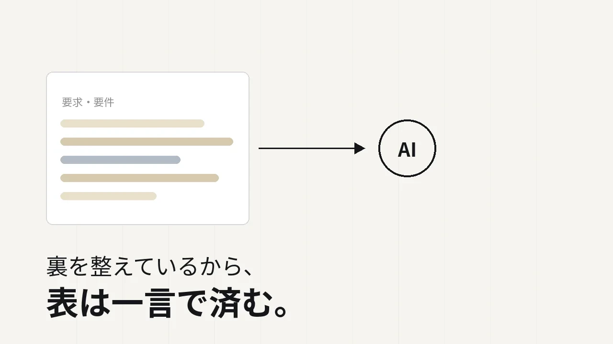
設計を、
言葉で定義する。
データモデル
設計書
要求・要件
AI
裏を整えているから、
表は一言で済む。
システム開発も同じです。設計を言葉で定義し、設計書や要求・要件に書き込んでAIに読ませる。裏を整えているから、表を意識せずに済んでいるだけです。
声 72字 ／ 画面 46字
はじめ：縦組み・縦の柱（全編で唯一の縦の重心）。おわり：横組みに戻り、左のカード→右の円の横の流れ。
主役は「表は一言で済む。」。縦組みはこのカットだけ（構図の変化の山）。
試聴待ち縦組みの区間は拍を半分に（ハーフタイム）、横組みに戻る所で元の拍へ。
- 0.0–1.2 秒：画面全体の Roll 90°（E_SINK）の着地。縦組みの見出しは行マスクで上から下へ。
- 1.2–4.5 秒：柱 3 本が順に y +60→0px で立ち上がる（stagger 0.25 秒）。読む間は柱ごと交互に ±12px 上下に流す（文字の形は崩さない）。
- 4.5–5.5 秒：3 本の柱が横に倒れながら 1 枚の要求・要件のカードへ畳まれる（scaleX 1→0.3 と位置移動、E_SINK）。カードの中の色の棒＝柱の色。
- 5.5–6.5 秒：カード→AI の円へ矢印を描く（s12、0.8 秒）。描き終わりで円が scale 1.0→1.12→1.0。
- 6.5–11.0 秒：下段 2 行を行マスクで入れ、カメラは Dolly in（scale 1.0→1.1）しながら右へ Truck。最後にカード以外が左へ抜け、07 の円柱へマッチカット（カードの色の棒が円柱の層になる）。
すべてで、明確な差。
1:00–1:13 / 約13秒 ・ 根拠（筆者の仕事での比較）

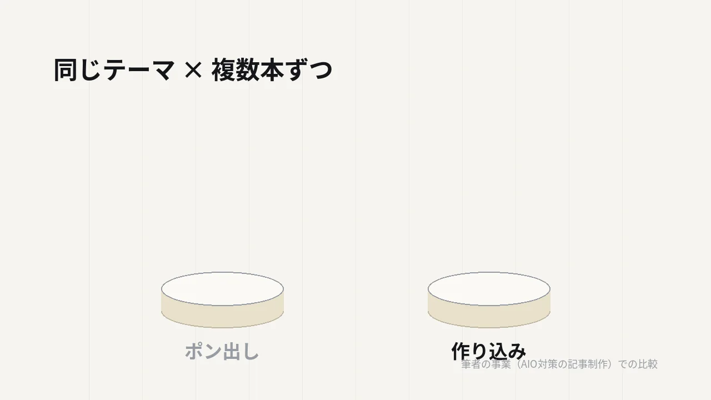

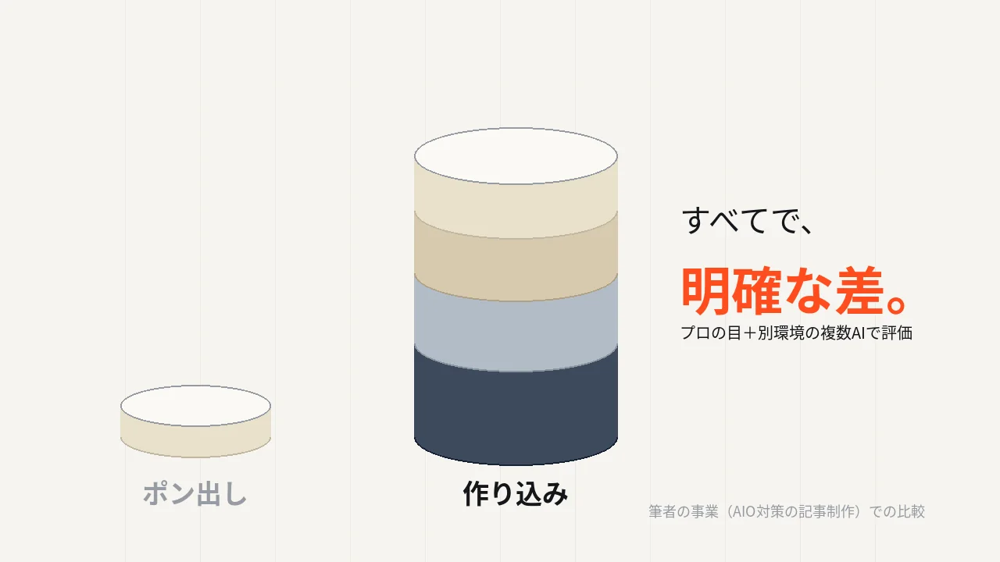
同じテーマ × 複数本ずつ
ポン出し
作り込み
すべてで、
明確な差。
プロの目＋別環境の複数AIで評価
筆者が仕事で書いた記事での比較
仕事で記事を書くときにも比べました。汎用エージェントのポン出しと、プロンプトもハーネスも作り込んだ自社プロダクト。同じテーマで複数本ずつ書いて評価すると、すべてで明確な差がつきました。
声 92字 ／ 画面 60字
はじめ：左右対称の 2 本（均衡）。おわり：右の円柱が縦に伸びて非対称（重心は右上へ）。
主役は「明確な差。」。3D 使用：同じ条件で厚みだけが違う比較を、回り込みで量として見せるため。数字は作らない。
試聴待ち積み上がる 4 回に拍の頭を合わせる。「明確な差」で一番大きなアクセント。
- 0.0–1.0 秒：06 のカードの色の棒が円柱の層に変わる（マッチカット）。
- 1.0–3.5 秒：見出しを行マスク。2 本の円柱が同時に床から y +80→0px（E_SLAM）。
- 3.5–8.0 秒：右の円柱だけ層が下から 1 枚ずつ積み上がる（各 0.7 秒、E_SLAM）。three.js のカメラは Orbit（方位 0°→22°、仰角 12°→20°、E_SINK）。左の円柱はそのまま（変えない＝比較の基準）。
- 8.0–8.6 秒：「明確な差。」を叩き込む（s16）。評価方法の 1 行と出典の 1 行を行マスク。
- 8.6–13.0 秒：Orbit を続けながら Dolly out（scale 1.05→0.95）。最後に 2 本の円柱の頂面の高さに水平の破線が走り、08 へ。
ポン出しでは、届かない領域がある。
1:13–1:24 / 約11秒 ・ 留保と理由

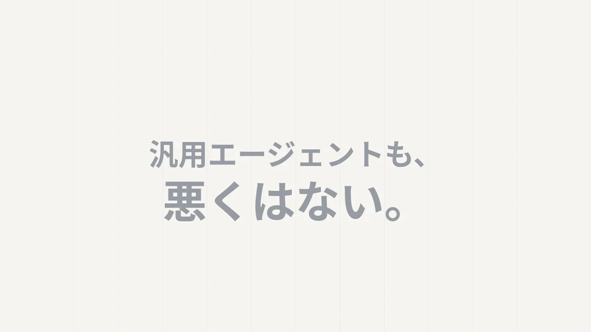

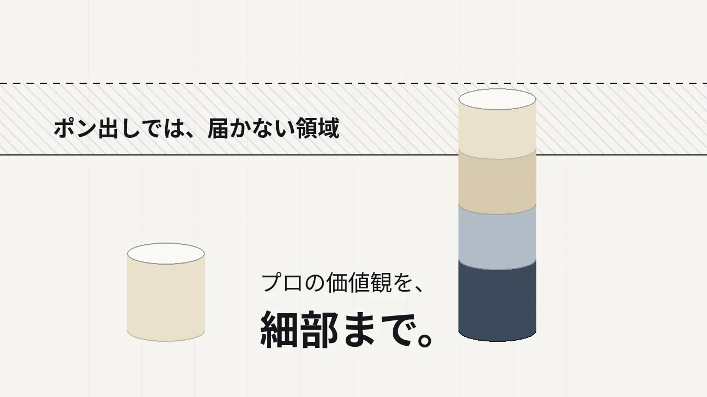
汎用エージェントも、
悪くはない。
ポン出しでは、届かない領域
プロの価値観を、
細部まで。
汎用エージェントの文章も悪くはない。でも、ポン出しでは届かない領域がある。差を生むのは、プロの価値観を細部までプロンプトに落とし込むことです。
声 71字 ／ 画面 42字
はじめ：中央揃えの 2 行（静かな中心）。おわり：上の帯・下の 2 本・中央の語の 3 段（上下に張った構図）。
主役は「届かない領域」。留保を声と文字の両方で残す。
試聴待ち留保の 3 秒は BGM を一段下げる（勢いは切らない）。
- 0.0–3.0 秒：留保の 2 行を中央に。カメラはゆっくり Dolly in（scale 1.0→1.06）。留保なので叩き込まず、行マスク 0.6 秒で静かに入れる（それでも画面全体は動かす）。
- 3.0–4.0 秒：2 行が下へ沈み、上から斜線の帯と到達線（破線）が降りる（y −200→0px、E_SINK）。
- 4.0–7.0 秒：2 本の円柱が下から伸びる。左は到達線の手前で止まり、右は線を越える（左 1.4 秒、右 2.2 秒、E_SLAM）。
- 7.0–11.0 秒：「プロの価値観を、細部まで。」を行マスク。カメラは右の円柱に沿って Crane up（y 0→−160px）し、上昇の勢いのまま 09 の 2 語へ Whip pan。
分かれ目は、ドメイン知識 × コンテキスト設計。
1:24–1:33 / 約9秒 ・ 主張（これから）

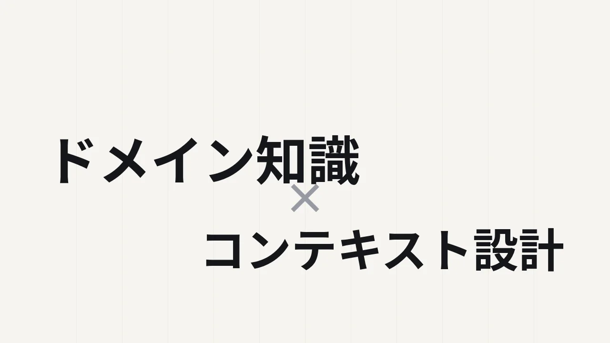

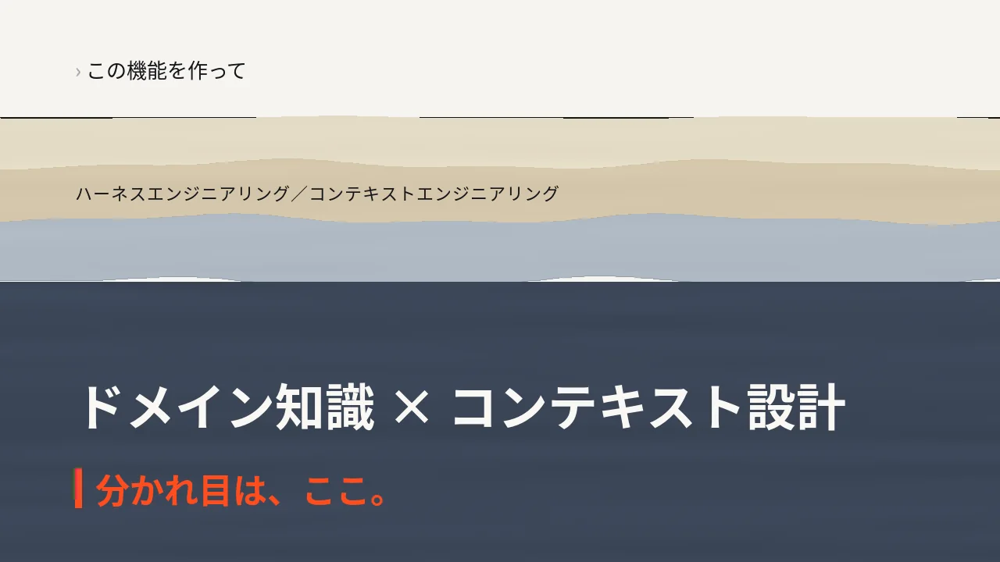
ドメイン知識
×
コンテキスト設計
ハーネスエンジニアリング／コンテキストエンジニアリング
分かれ目は、ここ。
一回の入力では解けない課題が増えた今、分かれ目は、ドメイン知識と、それをもとにしたコンテキスト設計の深さです。
声 55字 ／ 画面 51字
はじめ：対角の大きな 2 語（斜めの張り）。おわり：画面下半分の紺の地盤に白抜きの 1 行（重心は最下部）。
主役は「ドメイン知識 × コンテキスト設計」。地盤（最深の層）＝成果を分ける土台。
試聴待ち地盤に着く所で低音を最も深く。
- 0.0–2.0 秒：2 語を対角から叩き込み、「×」が回転 45°→0°（E_SLAM）。
- 2.0–4.0 秒：2 語が中央へ寄って 1 行に組み変わる（位置の移動のみ、字形は崩さない）。
- 4.0–6.5 秒：1 行ごと下へ沈み、カメラは Crane down で地盤の紺へ（E_SINK）。上に浅い層が流れていく（s15 の縦の視差）。
- 6.5–9.0 秒：朱の縦棒と「分かれ目は、ここ。」を左から行マスク。上段に「ハーネスエンジニアリング／コンテキストエンジニアリング」を小さく流す（x +40→0px）。
表層は、手軽になった。だから、裏側の深さが問われる。
1:33–1:42 / 約9秒 ・ 本人の結論

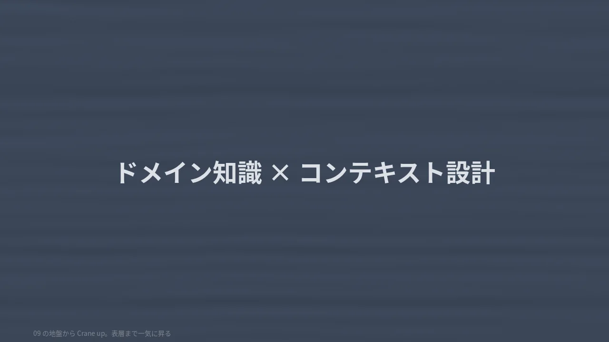

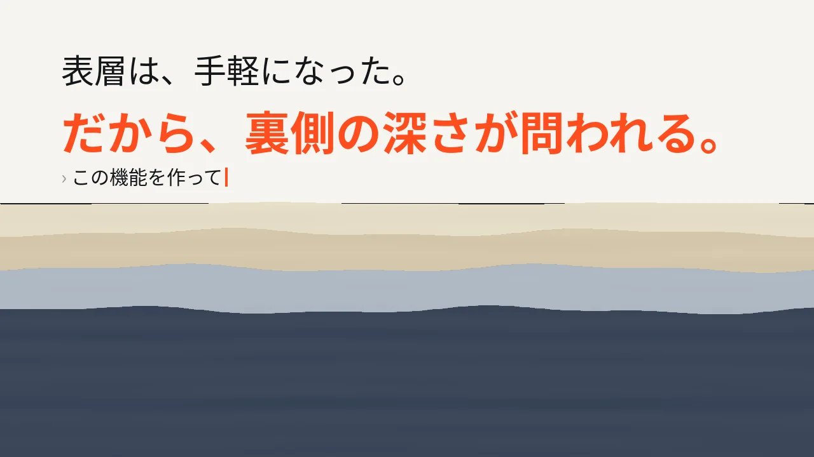
表層は、手軽になった。
› この機能を作って
だから、裏側の深さが問われる。
表層の指示は、手軽になった。だからこそ、裏側をどこまで深く設計できるかが問われている。私はそう考えています。
声 54字 ／ 画面 35字
はじめ：全面の紺（暗い面の重心）。おわり：上 45% が紙色の 3 行、下 55% が地層（上下 2 分割。04 のはじめと対になる）。
主役は「裏側の深さ」。問いかけで終えず、筆者の言葉（「私はそう考えています」）で閉じる。
試聴待ち結論の 1 行で一度だけ全部の音を揃え、エンドロゴへつなぐ。
- 0.0–2.6 秒：Crane up（y 0→−1080px 相当、E_SINK）。04 と逆向きの縦の視差。白抜きの 1 行は地盤とともに下へ流れて外へ。
- 2.6–3.4 秒：表層に出た瞬間、一行の入力が scale 0.45→1.0（04 の逆）。キャレットが 2 回点滅（0.5 秒周期）。
- 3.4–5.0 秒：「表層は、手軽になった。」を行マスク（E_SLAM）。
- 5.0–6.0 秒：「だから、裏側の深さが問われる。」を scale 1.15→1.0 で叩き込み（回転なし）。
- 6.0–8.4 秒：保持ではなく、画面全体を Dolly out（scale 1.0→0.92）しながら地層だけ下へ 40px 伸ばす（深さが増す）。
- 8.4–9.0 秒：朱の 1 行を残したまま、画面全体を上へ Whip pan し、ライムのエンドロゴへ。
エンドロゴ
1:42–1:47 / 約5秒 ・ 制作表示

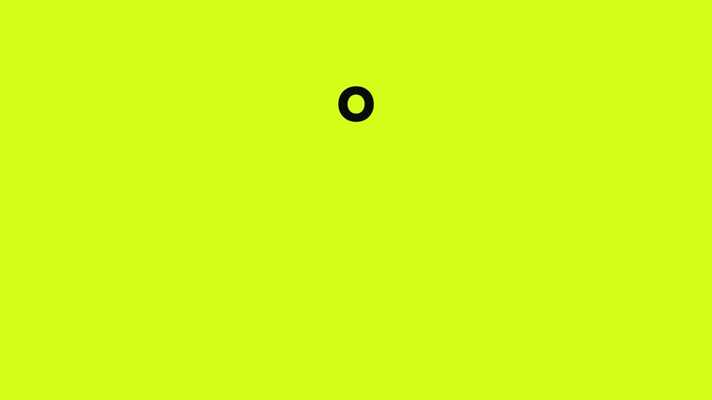

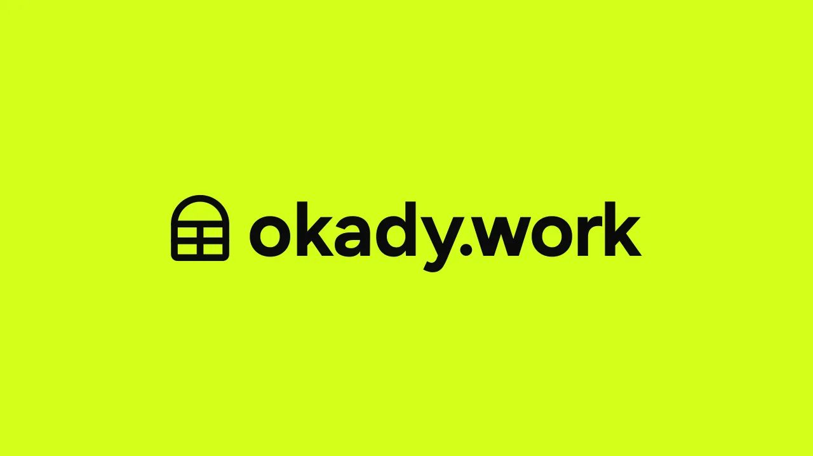
なし（ロゴのみ）
なし
声 0字 ／ 画面 0字
ロゴ以外の要素を置かない。
ロゴの形・色・比率は変えない（assets/logo/okady-work-logo.svg）。
試聴待ちロゴの終わりで BGM を収める。
- 10 からの Whip pan で切り替え（つなぎだけ勢いを付ける）。
- 0.0–2.6 秒：o が落ちてバウンドし定位置へ。2.6–3.2 秒：全体が左へスライド。3.0–4.0 秒：「.work」が一文字ずつ。以後 1 秒保持（SVG の CSS アニメーションをフレーム時刻から再現）。
詳細（ここから下は補足）
ここまでで、どんな動画で、どう組み、どう見えるかを示した。以下は制作に必要な分担・デザインシステム・動きの言語・素材・音・根拠・完成条件。
声・文字・素材の役割分担
| 担当 | 受け持つこと | 受け持たないこと |
|---|---|---|
| 声（ナレーション案） | 経緯と理由の文。「なぜ表は一言で済むのか」「比較で何をしたか」「なぜ差がつくのか」を文で運ぶ。 | 画面の語の読み上げ。全文字幕は付けない。 |
| 文字（キネティックタイポグラフィ） | 思い込み・反転・層のラベル・決め語・留保・結論の短い語。表の一行と地層のラベルの大きさの対比で「裏の厚み」を見せる。 | ナレーションの全文。比較の数字（原稿にない）。 |
| 図形・3D（地層・円柱） | 表と裏の因果（一行が層に支えられている）と、作り込みの厚みの比較。three.js の奥行きで量として感じさせる。 | 説明の文。装飾のための図。 |
| 画像・テクスチャ（企画側の実ファイル） | 地層の質感（assets/texture/sediment-grain.webp）。紙面の明るさを保ったまま「土の中」の手触りを足す。 | 写真による人物・場所の説明。 |
| 実写 | 使わない。地層は 03 から 10 まで同じ表現で続くため、一部のカットだけ実写にすると質感がそろわない。地層は全編 MG（three.js の層＋地層テクスチャ）で描く。 | — |
ナレーションは入れる。制作側が制作時に、各カットのナレーション案を原稿として声を入れる。画面の文字は声と分担した今の文量のままにし、全文字幕は付けない。
主張・根拠・留保の対応
| 役割 | 内容 | カット |
|---|---|---|
| 主張 | 消えたのではなく、潜っただけ。職種の名前が消えたことと、意図を伝える技術が要らなくなったことは別の話。 | 03・09 |
| 根拠 | 一言の裏でハーネスや設計書、要求・要件の情報がコンテキストとして渡っている。Web 制作では HIG・ページ構成・ヒーロー画像の構成まで伝えたほうが今でも圧倒的に良い。システム開発では設計を言葉で定義してチケットを AI に読ませる。筆者が仕事で書いた記事での比較で、作り込んだ自社プロダクトがポン出しに対し複数本すべてで明確な差。 | 04–07 |
| 留保 | イベントでの指摘や、職種の募集がほぼないことには、うなずける部分がある（筆者も音声入力でざっと指示する）。汎用エージェントの文章も悪くはない。比較は筆者の仕事での結果で、全員への保証ではない。 | 02・07・08（声と文字の両方で残す） |
| 最後に残す本人の結論 | 「表層の指示は、手軽になった。だからこそ、裏側をどこまで深く設計できるかが問われている。私はそう考えています。」（原稿の締めの言葉に沿う）。問いかけでは終えない。 | 10 |
冒頭（01「もう要らない。」→03「消えたんじゃない。潜っただけ。」）と最後（10「表層は、手軽になった。だから、裏側の深さが問われる。」）だけで主張が伝わることを確かめた。尺が足りなければ 06 から削る（主張ではなく周辺の例から）。
企画側が渡すもの／制作側が判断・制作するもの
| 企画側（この PR） | 制作側 |
|---|---|
| 主張の一文、構成と尺、画面の文言、ナレーション案、カットごとの絵コンテ（はじめ／おわり 22 枚）、字組み・色・動きの言語、効果の狙い、地層テクスチャの実ファイル、ロゴ、根拠対応表 | three.js＋DOM 文字層による実装（下記）、動きの細かな値の決定、BGM・効果音の制作と試聴、ナレーション（制作時に入れる。声の選定を含む）、合成・書き出し |
| 絵コンテ上の文字の安全域（左右 64px・上下 40px／1280 基準）の確認（済み） | 文字のはみ出し・重なりの機械検査は制作側（全カット 0.25 秒ごとの外接矩形の検査。AGENTS.md の手順） |
完了報告は「企画と絵コンテ・テクスチャ・ロゴの準備完了／音声と本編は制作側」と分ける。
@remotion/three の three.js 層。地層（04・09・10）と円柱（07・08）は three.js の層、文字は DOM／CSS の層（行マスク・palt）に分け、カメラの Crane・Orbit は three.js 層だけに掛ける。DOM の文字はカメラ値から位置だけを追従させ、形は崩さない。requestAnimationFrame の実時間計算は使わない。3D を使う理由：04 は「一行が層に支えられている」因果、07 は「同条件で厚みだけ違う」比較を奥行きで見せるため（それ以外のカットは 2D でよい）。- 章表示の帯・テロップ帯・最後の出典表示は入れない。顧客名・実在の人物・他社ロゴは出さない。
- フォント：Noto Sans JP 可変（同リポジトリの
../20261031_AIは頭を使わなくなる、と言われるが、以前より頭を使っている/assets/fonts/NotoSansJP-wght.ttf、OFL）。重複を避けるため同梱せず、このパスを参照する。
デザインシステム（文字・グリッド・色）
タイプスケール（1920×1080 基準・参考値）
| 段 | 大きさ | 太さ | 字間（tracking） | 行送り | 用途 |
|---|---|---|---|---|---|
| D（Display） | 220–300px | 900 | −0.03em（palt） | 1.0 | 01 はじめ・03「潜っただけ。」など 1 語が画面を割る瞬間 |
| H1 | 150–170px | 900 | −0.02em | 1.1 | 各カットの決め語（朱はここ） |
| H2 | 84–108px | 700 | −0.01em | 1.2 | 地層のラベル・見出し |
| Body | 56–66px | 500 | 0 | 1.4 | 前置き・補足の 1 行 |
| Caption | 28–34px | 400 | +0.08em | 1.5 | 出典の注記（07）・灰の小文字 |
| Prompt | 40–96px | 400 | +0.02em | — | 一行の入力「› この機能を作って」。› は灰、キャレットは朱の縦棒 |
サイズ比はおよそ 1 : 1.6 : 2.6 : 4（Body→Display）。1 画面に使う段は 3 つまで。カットごとに主役の段を変え、同じ大きさの連続を避ける。
グリッド
12 列（左右余白 96px、列間 24px）。ベースライン 8px。安全域は左右 96px・上下 60px（1280 基準では 64px・40px）。表層の線の高さはカットごとに変え（01 下端の予告→03 画面下 1/4→04 上端→10 中央やや上）、線の移動で「潜る・昇る」を示す。左揃えを基本にし、中央揃えは 08 はじめ（留保）だけに使う。縦組みは 06 だけ。
色（記号は下の表）
背景（全編ライト）
本文・表層の線
他者の声・留保・補足
主張の決め語だけ
#E9E0CB／#D8CAAE／#B2BCC6／#3E4A5C
ライム #d2ff1a はエンドロゴの背景だけに使う。地層の暗い層（#3E4A5C）の上の文字は紙色で抜く。朱は 1 画面に 1 か所まで。
動きの言語
| 名前 | イージング（CSS 表記の参考値） | 使う所 |
|---|---|---|
| E_SINK「沈む・昇る」 | cubic-bezier(.65,0,.35,1) | Crane down / up、Roll、層の移動。重さのある等価な加減速 |
| E_SLAM「叩く」 | cubic-bezier(.16,1,.3,1)、0.4–0.6 秒 | 決め語・層の差し込み・行マスクの登場 |
| E_PUSH「押し出す」 | cubic-bezier(.55,0,1,.45)、0.3–0.4 秒 | 次のカットへ勢いを渡す退場・Whip pan の入り |
| E_DRIFT「読む間の流れ」 | linear（1 カットかけて） | 読む区間のカメラ（scale 1.00→1.04〜1.10、x ±24〜160px）。止めない |
- リズム：116 BPM 前後を想定（1 拍 ≒ 0.52 秒、1 小節 ≒ 2.07 秒）。決め語の着地は拍の頭、層の差し込みは 1 拍ごと。曲が決まったら拍に合わせて秒を寄せる（秒は参考値）。
- 縦の運動が主軸：この作品の大きな動きは「潜る（Crane down）」と「昇る（Crane up）」。横の Pan・Whip pan はつなぎ、Roll は 05→06 の 1 回で縦組みへ構図を倒す。Orbit は 07 の比較だけ。
- 読む間：行・塊・層・カメラを動かす。文字の形は崩さない（1 字ずつの揺れ・脈動・散る登場は使わない）。層の境目だけは時刻から決まる正弦で 6px 前後うねらせる。
- フェードだけの切替はしない。全カットのつなぎを「マッチカット／Whip pan／Crane／Roll」のどれかにする（カット表に記載）。
記号・色一覧（1 記号＝1 意味）
| 記号 | 意味（これ以外に使わない） | 出るカット |
|---|---|---|
| 表層の線（墨の水平の細線） | 表（入力）と裏（コンテキスト）の境目 | 01（予告）・03・04・05・09・10 |
| › とキャレット（朱の縦棒） | AI への一行の入力（表の指示） | 03・04・09・10 |
| 地層の帯（4 色・下ほど濃い） | 裏で AI に渡るコンテキスト。濃いほど深い土台 | 03（字の中）・04・05・06（柱）・07・08（円柱の層）・09・10 |
| 円柱（コア） | 1 つの成果物を作る仕組みの厚み（比較用） | 07・08 |
| 朱 #FF4D1F の文字 | 主張の決め語（潜った・差・深さ） | 03・05・07・09・10 |
| 灰の文字 | 他者の声・留保・補足 | 01・02・03・05・07・08 |
| ≠ | 別の話（切り分け） | 03 |
| 墨の矢印 | 情報が AI へ渡る向き | 04・06 |
| 斜線の帯＋破線 | ポン出しでは届かない領域と、その到達線 | 08 |
| 水面の揺れ（表層の線が波打つ） | 語が表層の下へ潜った瞬間（表層の線を水面として扱うのは 03 の着水だけ） | 03 |
| 波形の線 | 声で流し込む指示（02 だけ。03 で表層の線へ変わる） | 02 |
点検済み：朱は決め語以外（矢印・枠・キャレット以外の図形）に使っていない。キャレットの朱は「入力」の記号として例外的に同色だが、文字ではなく縦棒の形で区別する。地層 4 色は層の深さだけを表し、カットで意味を変えない。
キャラ設定（人物なし）
人物・キャラクターは出さない。代わりに 2 つの「役」を一貫させる。
- 一行（表）：「› この機能を作って」。細く軽い（Regular・灰の ›・朱のキャレット）。どのカットでも同じ文言・同じ書体で、大きさだけが変わる（04 で 0.45 倍へ縮み、10 で 1.0 に戻る）。手軽さの象徴で、決して太字にしない。
- 地層（裏）：重く、ゆっくり、ほんの少しうねる。上から ガイドライン／要求・要件／設計書／ハーネス の順。急に崩れたり跳ねたりしない（時間をかけて整えたもの）。ラベルの字は太く大きい（H2）。最深部の紺の地盤は 09 で「ドメイン知識 × コンテキスト設計」の場所になる。
素材（実ファイル）
| ファイル | 役割 | 使う所 |
|---|---|---|
assets/storyboard/cut-XX-start.webp／cut-XX-end.webp（22 枚） | 構図と動きの絵コンテ | 各カット |
assets/texture/sediment-grain.webp（1920×1080、グレースケール） | 地層の質感。各層の色に乗算（不透明度 15–25%）。層ごとに位置をずらして使う | 03（字の中）・04・05・06・07・09・10 |
assets/logo/okady-work-logo.svg | エンドロゴ（20261031 の企画フォルダと同じファイル） | 11 |
テクスチャは企画側が PIL で作った画像（人物・文字なし）。ほかに新しい画像・動画は使わない。
音（BGM・効果音・ナレーション）
根拠（原稿）との対応
主張・根拠・留保と画面の文言の対応表は references.md。要点：比較の本数・点数は原稿にないので出さない／比較は筆者が仕事で書いた記事での結果と 07 に明記／Codex・Claude Code は「汎用エージェント」と呼び、ロゴは出さない／HIG は名前だけ。効果の検討記録（NANKA DEKIRU）は effects-direction.md。
完成条件・確認状態
- 01→03 と 10 だけで主張と結論が伝わる。結論は 10 の筆者の言葉で閉じる。
- 02・07・08 の留保が読める大きさ・時間で残る。
- 全編で画面全体が動き続け、フェードだけの切替や静止画の切替に戻らない。文字の形は崩さず、行・塊・層・カメラで動かす。
- 04 の Crane down で、表の一行と裏の層の大きさの対比が一目で分かる。
- 文字のはみ出し・重なりの機械検査を通している（制作側）。絵コンテの文字は企画側で安全域（1280 基準で左右 64px・上下 40px）内を確認済み。
- エンドロゴは仕様どおり（ライム全面・中央・アニメーション再現・保持）。
- 確認状態：等速未確認（本編未制作のため）。冒頭（01–03）・中盤（04・07）・後半（10–11）を等速で確認して報告する。